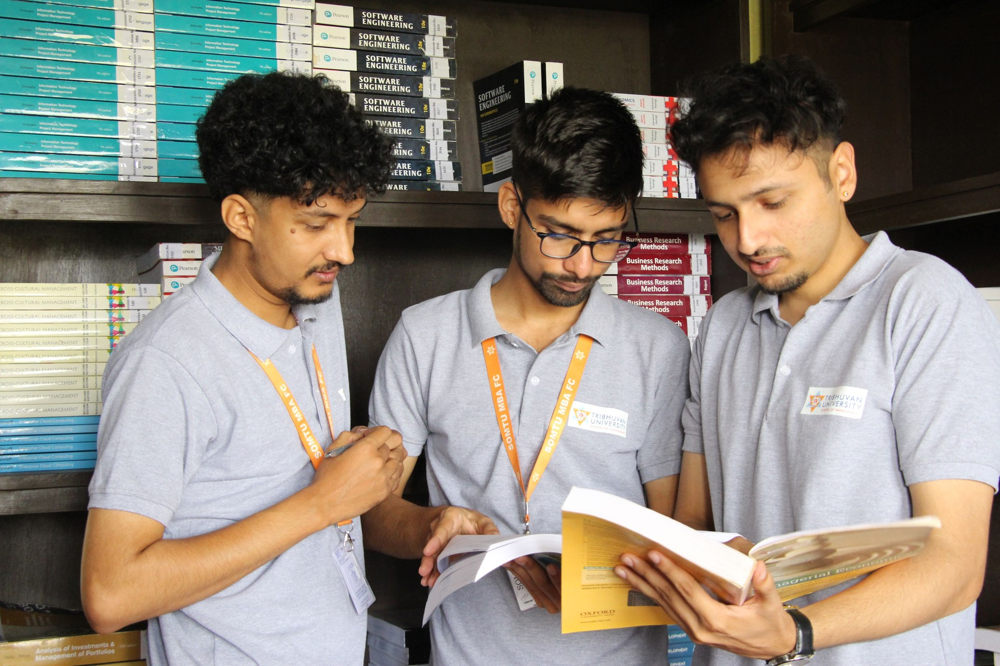
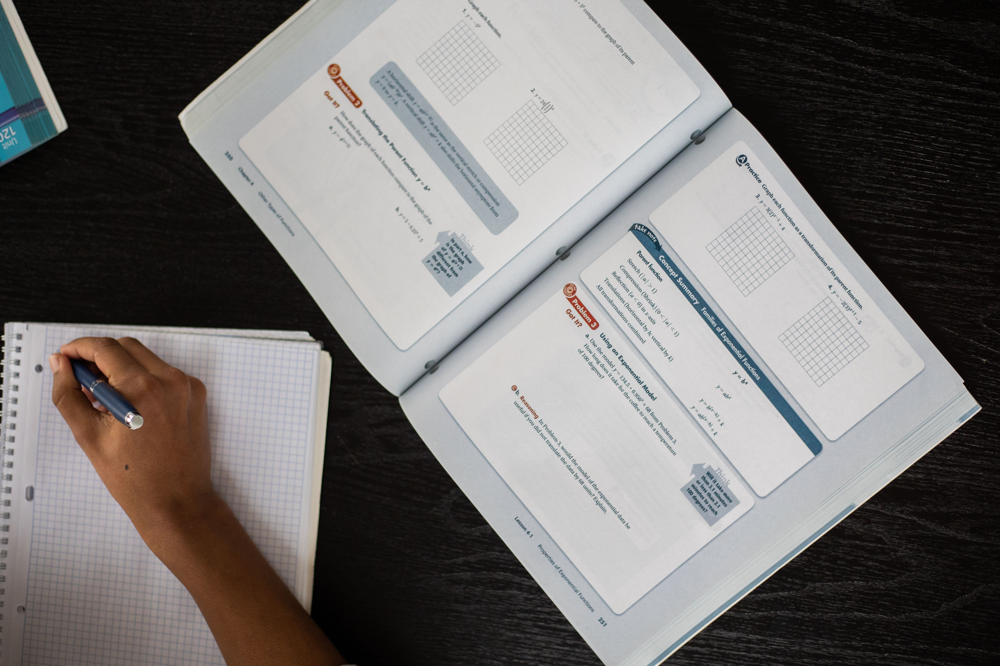

GOVERNMENT EXAMS
GOVERNMENT EXAMSSSC CGL Foundation
Build speed and accuracy for Tier I and Tier II with focused practice and revision.
Subjects covered
Quantitative AptitudeReasoningEnglishGeneral Awareness
Explore course Choose a course built around your target exam, core subjects and a practical preparation timeline. Compare tracks before you begin.
Each track includes its core subjects, a sample duration and a clear learning focus.
GOVERNMENT EXAMSBuild speed and accuracy for Tier I and Tier II with focused practice and revision.
 BANKING EXAMS
BANKING EXAMSPrepare for timed sections with question practice, current affairs and mock review.
 RAILWAY EXAMS
RAILWAY EXAMSCover core CBT topics and practise with an exam-pattern question routine.
Build a systematic general studies routine with revision and descriptive practice.

ENGINEERING EXAMSRevise engineering fundamentals through topic-led lessons and timed practice.

FOCUSED REVISIONStrengthen common aptitude topics with short lessons and repeatable drills.
Try a different exam, subject or category.
Turn a large syllabus into manageable sessions, practise in exam conditions, and revisit the areas that need attention.
Explore resources ↗Start with the syllabus and question format relevant to your goal.
Balance concept learning, topic practice and revision.
Use incorrect answers to decide what to practise next.